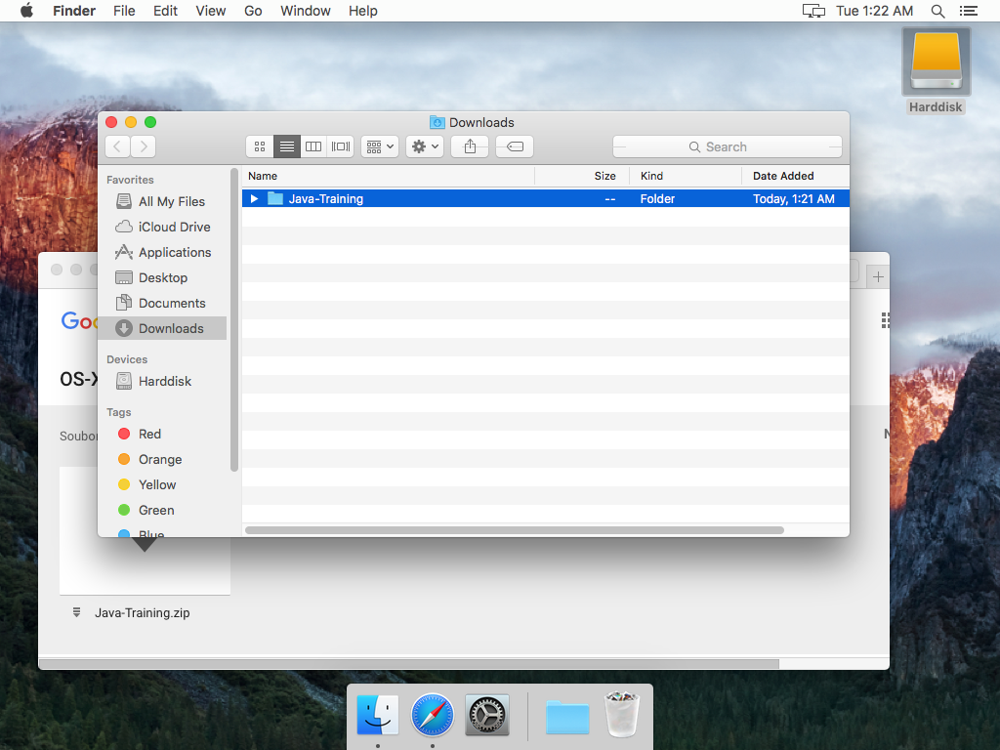

Instalační pokyny pro Mac OS X
Tyto pokyny jsou výhradně pro Mac. Instalaci pro uživatele Windows najdete ZDE.
Na kurzu budeme potřebovat Javu (JDK)
a programátorský textový editor IntelliJ IDEA (Community Edition).
Dobrá zpráva je, že obojí je zdarma.
Kompletní přednastavený archív si, prosím, stáhněte z tohoto
ODKAZU
a jednoduše rozbalte do složky /Users/{vaše_uživatelské_jméno}/Java-Training.
Pro první spuštění IntelliJ IDEA je nutné si v
Nastavení systému -> Zabezpečení a soukromí
povolit spouštění aplikací odkudkoliv (mimo Mac App Store).
Ihned po prvním spuštění IntelliJ IDEA
je možno si toto nastavení vrátit na původní hodnotu.
Je nezbytně nutné rozbalit vše právě do /Users/{vaše_uživatelské_jméno}/Java-Training.
V jiné složce (například na ploše nebo ve vaší složce Downloads)
nebudou aplikace fungovat.
Nejjednodušší je následovat tento postup:
-
Klikněte na odkaz
Java-Training.zip
Soubor se začne stahovat. Průběh lze sledovat v například v horním tlačítku Stahování (Downloads).

-
Až bude soubor stažený, automaticky se rozbalí. Podívejte se do složky Stažené soubory (Downloads).

-
Otevřete si v novém okně Finderu svůj harddisk
-
A proklikněte se do vaší domovské složky /Users/{vaše_uživatelské_jméno}
-
Domovská složka...
-
Uvnitř domovské složky...
-
Přetáhněte složku Java-Training z Downloads do vaší domovské složky.
-
A je to tam :-)
-
Nyní je ještě nutné v Nastavení systému povolit spouštění aplikací odkudkoliv (mimo Mac App Store).
-
Zvolte Zabezpečení a soukromí (Security & Privacy) a odemčete změny malým zámkem vlevo dole.
-
Zvolte Povolit aplikace stažené: Z libovolného zdroje (Allow apps downloaded from: Anywhere) a potvrďte ve vyskakovacím dialogu.
- Pokud jste vše udělali správně, můžete zkusit otevřít ukázkovou aplikaci a spustit ji.
Ukázková aplikace
-
Spusťte IntelliJ IDEA (najdete ji v
/Users/{vaše_uživatelské_jméno}/Java-Training/IntelliJ-Community.app).
-
Chvíli vydržte
-
Zvolte Otevřít (Open)
-
Ukázkovou aplikaci najdete v
/Users/{vaše_uživatelské_jméno}/Java-Training/Projects/PrvniAplikace.
Pozor! Nikdy nerozbalujte složky dvojitým kliknutím. Jednotlivé složky je nutné rozklikávat pomocí trojúhelníkové šipky před jejich jmény. Až najdete složkuPrvniAplikace, potvrďte tlačítkemOK.
-
Zvolte v pravo nahoře zelenou šipku
Run

-
Měli byste vidět tuto malinkou aplikaci
-
Nakonec je vhodné, abyste si zpět v
Nastavení systému -> Zabezpečení a soukromívrátili původní nastavení, odkud je možné spouštět aplikace.
Tato změna již neovlivní Javu a editor IntelliJ IDEA, protože ty už se povedlo spustit a váš počítač si to pamatuje.
Pokud by s něčím byl jakýkoliv problém, nezoufejte. Na kurzu vám pomůžeme.